SvR2011 Mod Maker
Make arenas, superstars, moves, crowd signs, media packs and match types for the WWE SmackDown vs. Raw 2011 PC port - and look inside the game's own files while you do.
What it is
The Mod Maker is the port's tool for making mods: small files (.svrmod) that add things to the game without touching its own files. You make a mod here, the launcher installs it, and the game picks it up the next time it starts.
Arenas
A new arena on the select pages: edited in 3D here or in Blender, with its banner, loading screen and VS screen.
Backstage rooms
A backstage brawl room rebuilt, or an area of your own with its cars and props.
Superstars
A new playable character with its model, theme, entrance video, attires, picture and crowd signs.
Moves
Moves the game doesn't have, as a pack on its own or inside a superstar.
Crowd signs & media
Signs the crowd holds up; entrance videos, renders, themes, arena screens, menu music, sounds.
Match types
Switches for the port's extra match types, and your own match types from the game's rules.
Other games
Arenas and superstars from WWE '13, SvR 2010 and SvR 2008, converted the way the bundled ones were.
Look inside
Every file of the game, every animation, every picture - browse, play, export.
Setting up
- Open it from the launcher. On the launcher's Mods tab press Open Mod Maker. It then knows where the game is. Started on its own, it asks for the game folder (the one with the
pacfolder) once and remembers it; the button at the top right changes it. - Direct3D 11 is all it needs for making mods. The window is fully resizable; Aa at the top right sets the text size.
- Optional: Python 3 (python.org, tick Add to PATH) with
pip install numpy pillow, and ffmpeg (on PATH or inC:\ffmpeg\bin) - only for the Other games page's SvR 2010 / SvR 2008 / WWE '13 superstar converters, which run the port's Python tools from theMod Maker Toolsfolder next to the Mod Maker. The page tells you what is missing. - Optional: Blender (any recent version) to edit arenas as FBX.
Mods\ inside the game folder and are laid over the game while it runs. A mod you don't like is one tick in the launcher away from off.The window
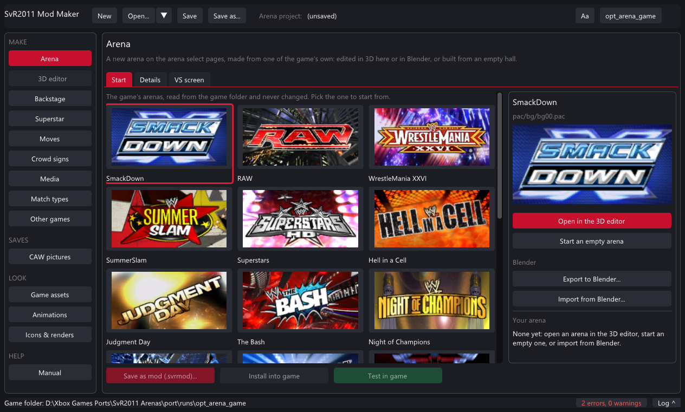
Project: New / Open / Save Pages Text size, game folder The page's tabs Save / Install / Test Problems and the log- Title bar - New starts a fresh project of one kind; Open takes a project or any
.svrmod; Save / Save as keep the project; the arrow lists recent files. A*after Save means unsaved changes. - Rail - MAKE pages each make one kind of mod; SAVES edits your Created Superstars' pictures; LOOK pages show the game's assets, animations and pictures; HELP is the built-in manual.
- Status line - the last message, what a long job is doing, the count of problems (click it) and Log, which folds the full log out.
- Save as mod / Install into game / Test in game - at the bottom of every mod page. Save writes a
.svrmodto share; Install writes the mod straight into the game folder; Test installs it and starts the game.
Shortcuts: Ctrl+S saves the project, Ctrl+O opens one.
Projects, mods and problems
Problems
Every mod page checks its work as you type. The list sits at the bottom of the page and in the status line:
- red something is missing or wrong - Save and Install stay off until it is fixed (hover the greyed buttons to read why).
- yellow a warning: the mod works, but you may want to know (no banner picture, a long name, a loud theme...). You confirm once when saving.
Hover any (?) for a longer explanation of a field.
Tutorial: your first superstar
A new playable character under the M tile of the character select, in about five minutes. You need a character model pac - for this tutorial, one of the game's own.
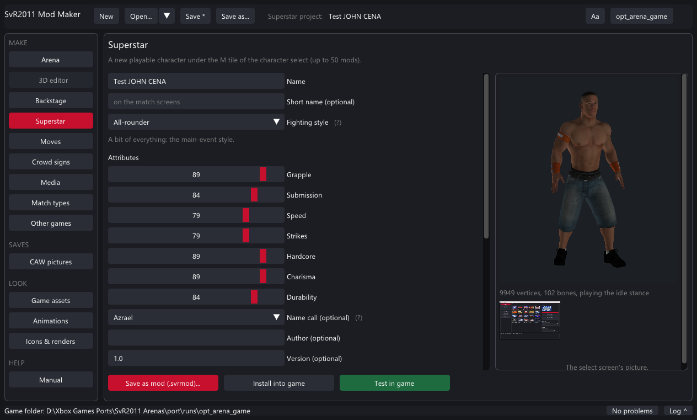
- Press Superstar on the rail.
- Name: type the superstar's name (up to 31 letters). A short name goes on the match screens if the name is long.
- Fighting style: pick one. It decides the move-set, the entrance motions and the starting attributes (from one of the game's superstars underneath). Move the attribute sliders if you like.
- Model (ch.pac): press the button and pick
pac\ch\ch139.pacfrom the game folder (John Cena's model). The preview shows it standing in its idle stance - drag to turn it. A model that doesn't load shows why under the preview. - Optional: Theme song (mp3, m4a, wav, flac, wma, ogg), Entrance movie (press From a video... next to it to make the 320 x 320 Bink from any video or picture), Attires 2-4 (another model pac's first attire each), Crowd signs the fans hold, a Name recording for the ring announcer, and the Select picture (a PNG with a transparent background looks best - the render, the bust and the face icon are made from it).
- Optional, under More: the entrance (any superstar's), an announcer name the game has clips of, the abilities, a moves list and a move pack.
- Check the Problems at the bottom: red ones must go. Then Save as mod (a
.svrmodto share) or Install into game, or Test in game to install and start the game right away. - In the game: character select → the M tile (EXTRA) → your superstar is in the list, with a MODDED badge.
.svrproj holds every setting and a copy of every file you picked, so you can come back and change the mod later - even from another PC.manifest.txt and ch.pac are required; everything else falls back to the style's.Tutorial: your first arena
A new arena on the arena select pages, made from one of the game's own, edited in the 3D editor.
- Arena on the rail → the Start tab. Click the arena to start from (its room, ring and VS screen style are what your arena plays in). Double-click it.
- The 3D editor opens. Right drag orbits, middle drag pans, the wheel zooms. Click an object (or pick it in the list on the left); the orange wireframe is the selection.
- Move it: Move (W) then drag an axis of the gizmo or drag the object on the floor. Turn (E) and Scale (R) work by dragging left and right. Arrow keys nudge by the snap step. Ctrl+Z undoes, Ctrl+Y redoes.
- Give it a new look: in Object on the right, pick another of the arena's textures or Use a picture... of yours. Pictures from a folder... (under Add) replaces every texture that has a same-named picture in a folder - a whole retexture at once.
- Add things: a box, an object from an OBJ / FBX file, or anything from the 20 arenas through Library (a ramp, a stage, a screen) placed where it was or at the view centre.
- Ring Kit: each rope's colour or picture (or no rope), the turnbuckles, the corner pads, the low rope's height and gap. Lighting: presets, a colour and strength, the crowd on or off.
- Watch the Size budget: an arena must fit the room the game gives the original. When it is over, the biggest textures are halved at save.
- Back on the Arena page, Details: the name, a banner (any picture, shown at 256 x 128) and a loading screen (1024 x 512). VS screen: replace any picture of the screen shown before the match.
- Save as mod or Test in game. In the game, the arena sits on the select pages after the game's own (RIGHT past the last one).
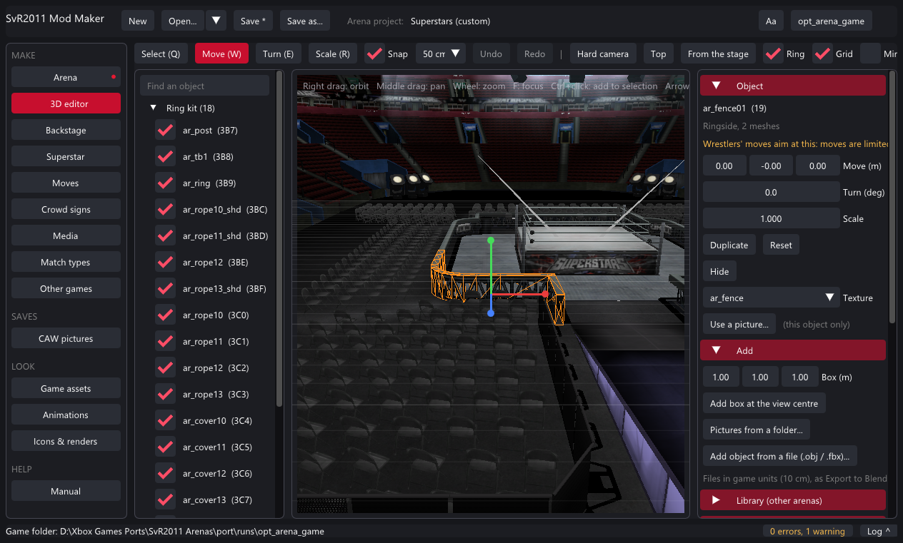
Tutorial: an arena in Blender
- On the Arena page's Start tab, pick an arena and press Export to Blender.... Choose a folder: you get
arena.fbx, atextures\folder of PNGs andarena.json. The folder opens. - In Blender: File → Import → FBX, pick
arena.fbx. 1 Blender unit = 1 metre. Every object is named like the game's; textures are already assigned. - Edit: move and reshape objects, replace textures (keep the file names, or add new PNGs next to them), add your own meshes. Keep the ring where it is. Export as FBX (File → Export → FBX, selected or all).
- Back in the Mod Maker, same arena tile, Import from Blender... and pick your FBX. Changed meshes, new objects and new textures come in; the log says what happened and what didn't. Edit on in the 3D editor if you want, then save as a mod.
Tutorial: a backstage room
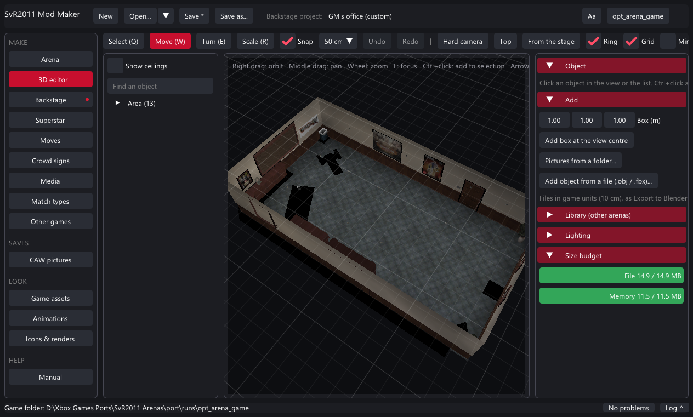
- Backstage on the rail. Pick the area (parking lot, GM's office, locker rooms, interview area, catering) and press Open the area in the 3D editor.
- Edit the room like an arena - but keep the floor and walls where they are (the game's cameras and the fighting box expect them). The cars, crates and weapons are placed by the game and are not shown.
- Name it. Save as mod or Test in game: the game plays your room in that area's backstage brawls. One backstage mod plays at a time.
An area of its own
Tick An area of its own to get a row of your own in ONE ON ONE → BACKSTAGE instead of replacing the room: give it a row name, a fight box (centre and half sizes in game units, 1 = 10 cm), a camera distance cap and a minimum camera height for small areas, and optionally a gimmick pac with the area's own cars and props. The Other games page's SvR 2008 tab makes a complete one from the 2008 Parking Lot.
Tutorial: crowd signs
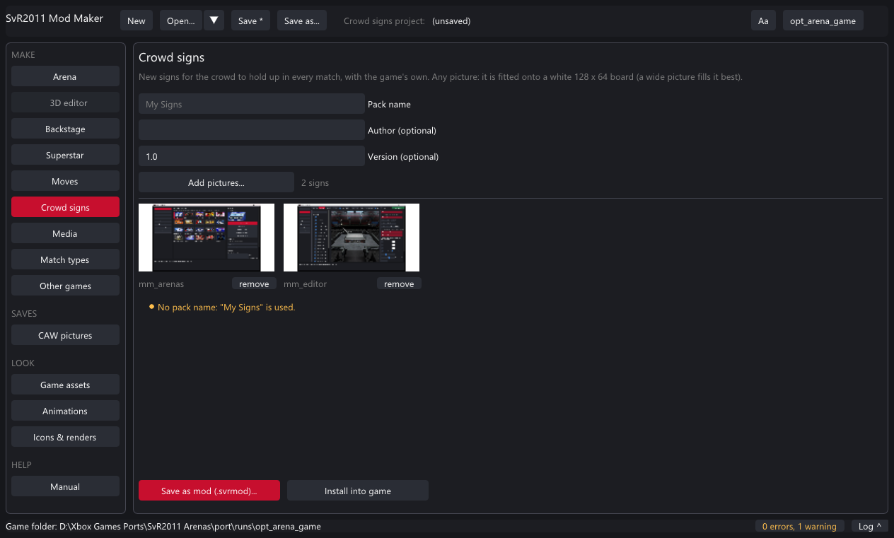
- Crowd signs on the rail. Name the pack.
- Add pictures... - any pictures, several at once. Wide pictures fill the board best. Remove any with remove.
- Save as mod or Install. The crowd holds your signs in every match, mixed with the game's own.
Signs for one superstar's fans go on the Superstar page instead (Crowd signs, up to 4).
Tutorial: videos, renders, music
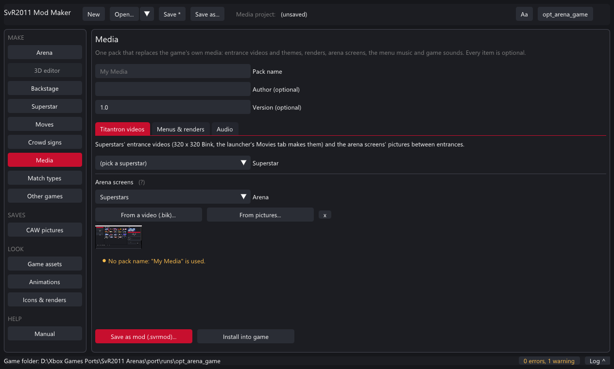
- Media on the rail. Name the pack.
- Titantron videos: pick a superstar and its new entrance video (a
.bik, or From a video... to make one), and for any arena the screens' pictures between entrances (10 frames from a video, or pictures shown in turn). - Menus & renders: pick a superstar and a picture - the render, the bust and the face icon are made from it.
- Audio: a superstar's entrance theme, the menu music, and any game sound by its event name (without
Play_, e.g.SVR10_Chant_Sena_001). - Save as mod or Install; it takes effect the next time the game starts.
Tutorial: new moves
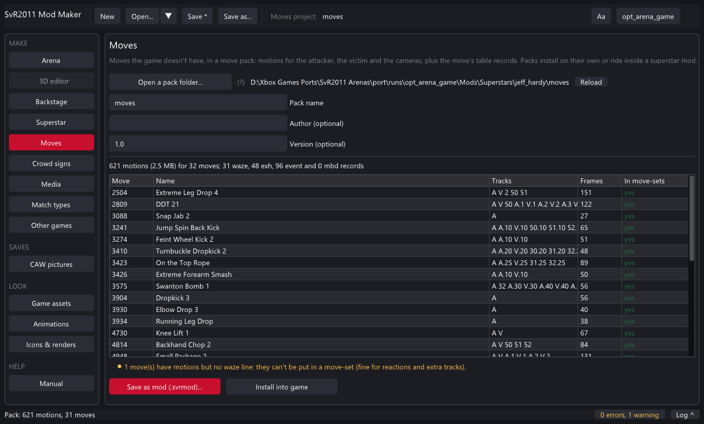
Moves the game doesn't have come as a move pack: the motions and the move's table records. Packs are made from SvR 2010 by the Other games page (SvR 2010 moves tab, or a whole superstar), or by hand with the port's tools.
- Moves on the rail → Open a pack folder... (a folder with
pack.txtandmotions\). The page checks every line and lists the moves. - Red problems: missing motion files, bad records. Yellow: moves with motions but no category bits (they can't be put in a move-set - fine for reactions).
- Save as mod (installs into
Mods\Moves) - or, to carry the moves inside a superstar, pick the same folder on the Superstar page under More → Move pack folder. - The game merges every enabled pack into copies of its files when it starts (a few seconds the first time, then only when a pack changes). Use the moves in CREATE A MOVE-SET.
Tutorial: match types
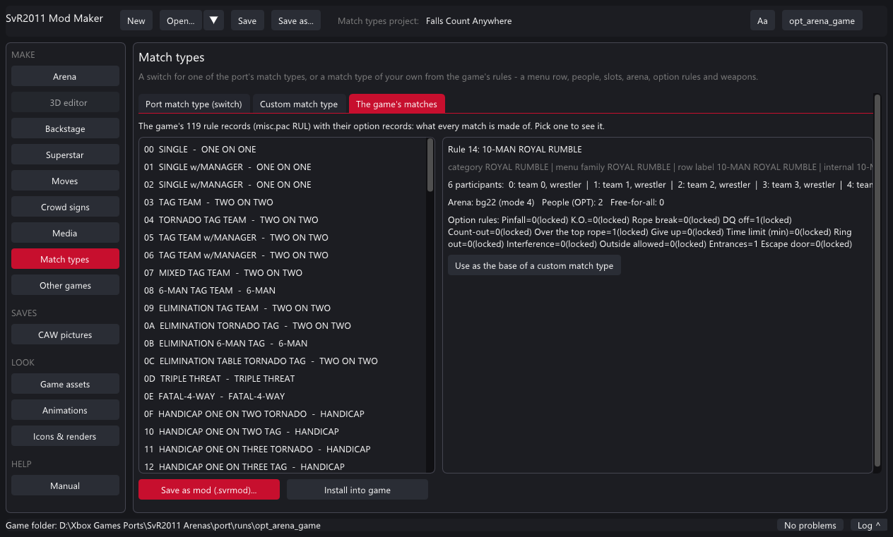
- Match types on the rail.
- Port match type (switch): pick one of the match types the port adds (Falls Count Anywhere, Championship Scramble, Lumberjack, Free-Roaming Backstage, Weapons Everywhere, Slobber Knocker, Three Stages of Hell, Elimination, Mystery Opponent...) and save its switch mod. Players turn it on or off in the launcher.
- Custom match type: pick a base match (by name, from the 119), a menu list and submenu for its row, people and free-for-all, the slots, an arena, the option rules you want set (with a lock to stop players changing them) and whose weapons lie around the ring. The manifest.txt it writes is shown at the bottom.
- The game's matches is the reference: every rule record with "Use as the base".
docs/MATCH_TYPE_MODS.md) and warns until the game reads it. Custom types play offline, or online when both players have the mod.Tutorial: from other games
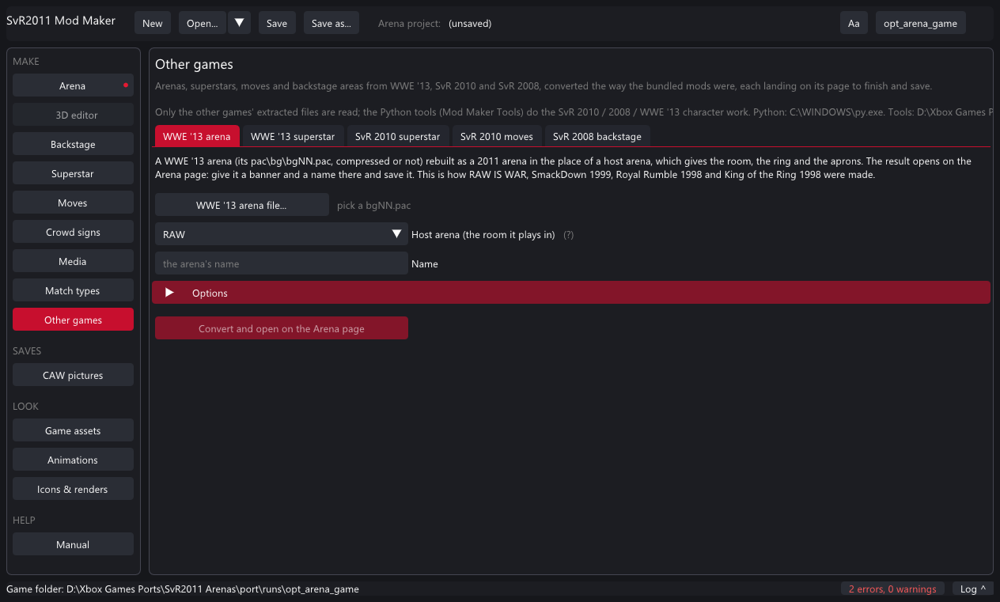
A WWE '13 arena (built in)
- Other games → WWE '13 arena. Pick the WWE '13
pac\bg\bgNN.pac(compressed or not) from its extracted files. - Pick the host arena - the 2011 arena whose room, ring and aprons it uses (RAW was used for the bundled ones). Name it.
- Options if needed: host ring / aprons / crowd, barrier corners, the full rope, pruning unused pictures, role lights, the canvas tone, meshes to drop (a model over about 430 KB crashes the load; the report after a conversion names the heavy ones).
- Convert. A minute later the arena opens in the 3D editor; the Arena page takes its banner and name; save.
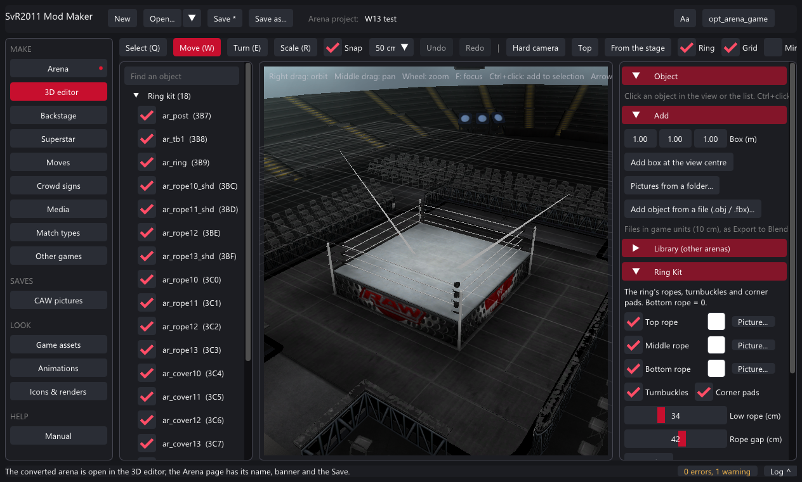
A WWE '13 superstar, an SvR 2010 superstar, SvR 2010 moves, the SvR 2008 backstage
These run the port's Python tools (see Setting up). Point each tab at the other game's extracted pac folder; the SvR 2010 superstar tab has a Survey that lists the ids and names. The result opens on the Superstar, Moves or Backstage page as a normal project.
Tutorial: Created Superstar pictures
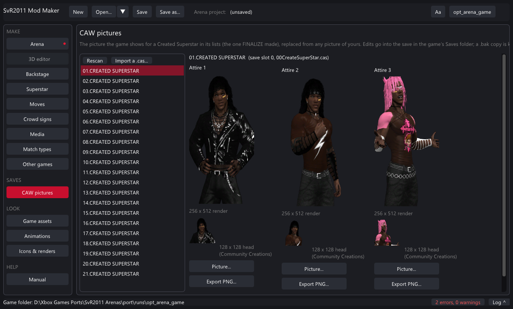
- Close the game. CAW pictures on the rail lists your Created Superstars (from the game's Saves folder).
- Pick one. Each attire shows the 256 x 512 render the lists use and the 128 x 128 head the Community Creations preview uses.
- Picture... under an attire: any picture of yours (a transparent background fits the lists best). The head is cut from its top, or pick a Head picture.... Undo drops a pending change.
- Save into the game's save. The save's checksums are redone; a
.bakcopy of the save is kept the first time. - Import a .cas... brings someone else's Created Superstar into a free slot (its Paint Tool logos come through the launcher's Saves tab).
Looking inside the game
Game assets
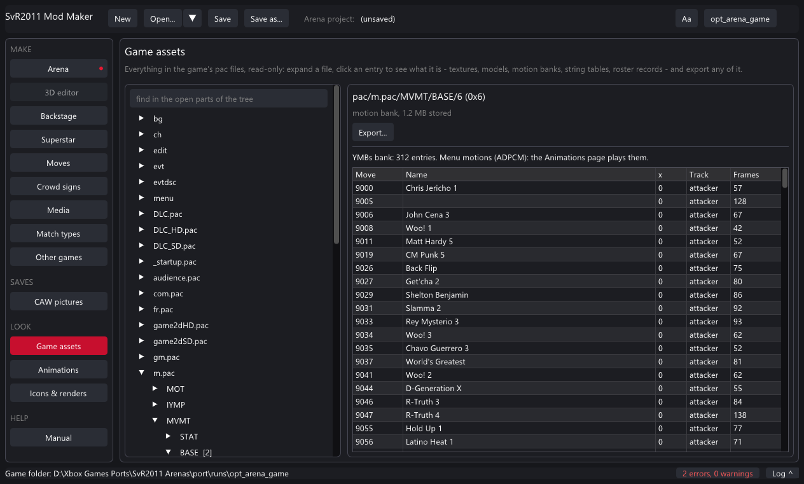
m.pac: every motion with its move name.Expand the folders and pac files on the left; nothing is read until you look. Each thing shows as what it is: textures (zoom, checkerboard for transparency), texture bundles (click a thumbnail), models (meshes, nodes, textures), motion banks, string tables (every text by id), roster records, text, or bytes. Export writes any of them out, textures as PNG too.
Animations
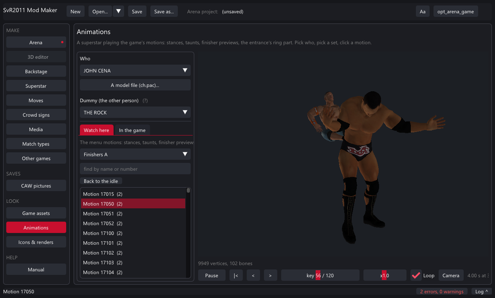
Pick a superstar (or any ch.pac), optionally a dummy, then a set: stances, taunts, the entrance's ring part, finisher previews, abilities. Play, pause, step, scrub, speed, loop. The camera turns (left drag), tilts (right drag), pans (middle drag) and zooms (wheel). The match moves - grapples, strikes, a move pack's moves - only the game plays: In the game picks one by name and Play in game starts a test match where it is done to the dummy every few seconds.
Icons & renders
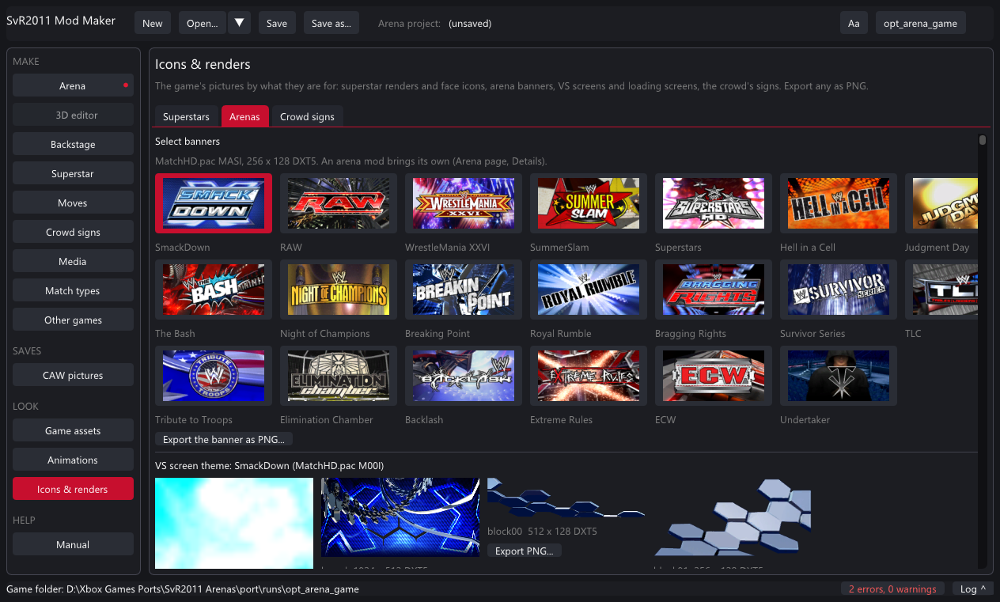
Reference: every page
| Page | Makes | Installs into | Shows in the game |
|---|---|---|---|
| Arena | type=arena: arena.pac, banner.dds, load.dds, vs\*.dds | Mods\Arenas\<id> | arena select, pages after the game's |
| 3D editor | the arena / room being edited | - | - |
| Backstage | type=backstage: arena.pac (bg78), own-area keys, gimmick.pac | Mods\Backstage\<id> | that room's brawls, or its own row |
| Superstar | type=superstar: ch.pac, theme, movie, renders, signs, attires, moves | Mods\Superstars\<id> | the M tile (up to 72) |
| Moves | type=moves: pack.txt + motions\ | Mods\Moves\<id> | CREATE A MOVE-SET |
| Crowd signs | type=signs: NN_name.dds | Mods\Signs\<id> | the crowd, every match |
| Media | type=media: videos, themes, renders, screens, sounds | Mods\Media\<id> | entrances, menus, arena screens |
| Match types | type=matchtype: manifest only | Mods\MatchTypes\<id> | the match menus |
| Other games | conversions → the pages above | - | - |
| CAW pictures | edits the Created Superstar saves | Saves\ | the select lists |
| Game assets / Animations / Icons & renders | nothing: viewers and exporters | - | - |
Reference: 3D editor controls
| Do | How |
|---|---|
| Orbit / pan / zoom | right drag / middle drag / wheel; F focuses the selection; Hard camera, Top, From the stage are presets |
| Select | click an object in the view or the list; Ctrl+click adds to the selection; Ctrl+A every movable object; Esc none |
| Move / Turn / Scale | W / E / R (Q select only); move drags an axis or the floor, turn and scale drag left / right; Snap rounds to the step (10 cm - 1 m) |
| Nudge | arrow keys move by the snap step (Shift x10), PageUp / PageDown up / down |
| Undo / redo | Ctrl+Z / Ctrl+Y (moves, textures, hiding) |
| Duplicate / hide / delete | Ctrl+D; the list's ticks; Delete hides a game object or removes an added one |
| Textures | Object → texture list or Use a picture...; Add → Pictures from a folder... for many at once |
| Picture of the view | Picture... in the toolbar saves a PNG |
Reference: the .svrmod format
A .svrmod is a zip of one mod folder with a manifest.txt of key=value lines. The full reference - every key, every file, every limit, and the game's own file formats - is docs\SVRMOD_FORMAT.md, also shown on the Mod Maker's Manual page. The common keys:
type=superstar arena | backstage | superstar | moves | signs | media | matchtype
id=my_superstar the folder name: letters, digits, _
name=My Superstar
author=Me
version=1.0
made_with=Mod Maker 2.0.5
A file named disabled in the folder turns a mod off (the launcher's tick). Mods made with the Mod Maker reopen in it; mods made elsewhere open too when their manifest is complete.
Problems and fixes
| You see | What it means |
|---|---|
| "The model is not a character model pac (EPK8)" | The file isn't a chNNN.pac. Arena pacs and menu pacs are EPAC, not characters. A WWE '13 model must be converted first (Other games). |
| "N textures halved to fit the game's room" | The arena was over its original's size; the biggest textures were shrunk. Use smaller pictures or fewer added objects to avoid it. |
| "The game is running: close it first" | Installs and save edits need the game closed (it keeps its files and saves open). |
| "ONE ON ONE is full: give the row a submenu" | That menu list shows at most 14 rows; a custom match type there needs a submenu. |
| "Needs Python 3 / numpy and Pillow / ffmpeg" | The converter tabs on Other games need them (see Setting up). Recheck after installing. |
| The arena loads as an empty hall or crashes | Make sure the mod says which arena it plays in place of (base) and that no model is over the size ceiling; the Size budget panel and the conversion report show the heavy ones. |
| A superstar mod doesn't show up | 50 is the limit; check the launcher's Mods tab that it is on; a mod needs ch.pac and a name. |
| Theme too loud | Make it about -24 LUFS (the game's own are about 7 dB under full level). |
Questions
Does it change my game? No. Mods are laid over the game's files while it runs; the game folder's pac files are never written.
Where do mods go? <game>\Mods\<Type>\<id>\. The launcher's Mods tab lists them with a tick to turn each on or off; - removes one (match types are switched off instead).
Can I share a mod? Yes: the .svrmod is one file; anyone adds it with + in the launcher. Share the .svrproj too if they should be able to change it.
Can I edit a mod someone else made? Open its .svrmod: it comes into the right page with what the manifest says. Files it doesn't carry (a texture's source picture) can't come back, but everything the game needs is there.
What about a model made in Blender? Arenas: yes, fully (export, edit, import). Superstars: not yet - a superstar's model has to be an existing ch.pac, one of the game's or one converted from SvR 2010 / WWE '13.
Where is the manual inside the app? HELP → Manual: the same text as docs\MOD_MAKER_MANUAL.md and the format reference.
SvR2011 Mod Maker guide - part of the WWE SmackDown vs. Raw 2011 PC port. This guide online: kaikoclanworth1.github.io/wwe-svr2011-pc.